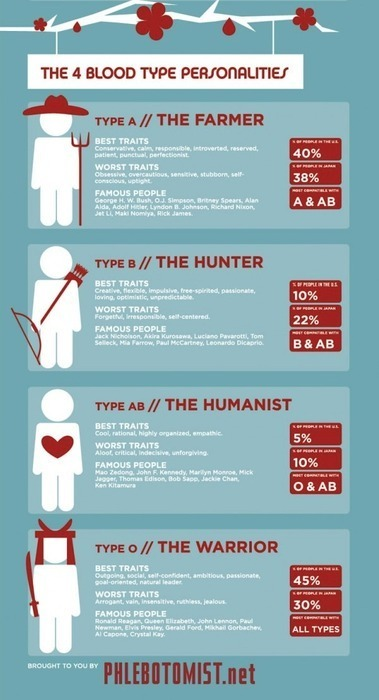

Mon, 23 Aug 2010 17:29:00 · infographic · bloodtype · Japan
Infographic: You Are What You Bleed
Apparently, the Japs never cease to amaze me when it comes to quirkiness. This time, it’s the Japanese Bloodtyping visualized as Infographic.
It’s becoming a popular Japanese belief that a person’s blood type or ketsueki-gata (血液型) can be used as a predictive tool of their personality, temperament, and compatibility with others.

And if that’s not odd enough, Japanese TV station often shows Blood Horoscope. Heck, they even have Blood type soft drinks… No kidding! This cool Infographic sums up some interesting facts about it.
So what type are you? ~ Read more here the original “Read more” link is no longer available